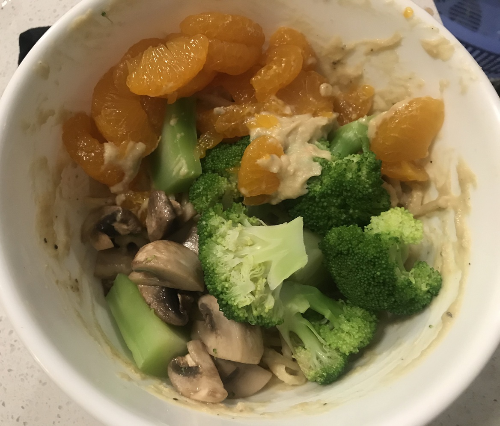

| Other | Meat | Veggie | Fruit |
|---|---|---|---|
| cashews | japanese sweet potato | date | |
| cornstarch | |||
| garlic powder | |||
| mushroom powder | |||
| nutritional yeast | |||
| pepper | |||
| salt | |||
| soy milk |
| instructions |
|---|
| Boil Japanese sweet potato until cooked |
| Blend potato with soy milk, cornstarch, cashews, mushroom powder, 1tbsp miso paste, 3 tbsp nutritional yeast, garlic powder, salt, pepper, dates |
| Adjust texture accordingly |
| Eat with pasta |